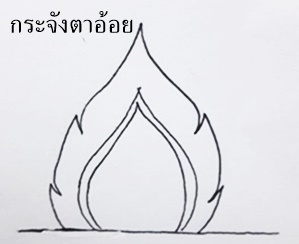
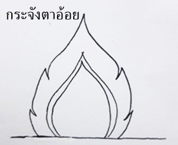
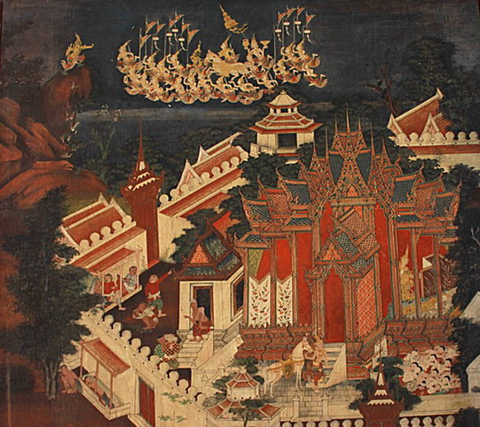
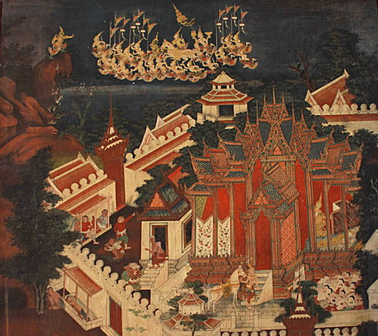
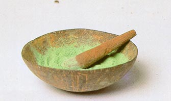
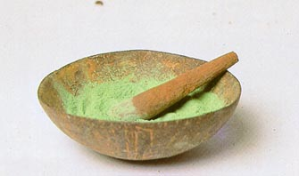

จิตรกรรมไทย (Thai Painting)
⇓ ⇓ ⇓ ⇓ ⇓ ⇓ ⇓ ⇓ ⇓
ภาพเขียนที่มีลักษณะเป็นแบบอย่างของไทย ที่แตกต่างจากศิลปะของชนชาติอื่นอย่างชัดเจน ถึงแม้จะมีอิทธิพลศิลปะของชาติอื่นอยู่บ้าง แต่ก็สามารถดัดแปลง คลี่คลาย ตัดทอน หรือเพิ่มเติมจนเป็นเอกลักษณ์เฉพาะของตนเองได้อย่างสวยงาม ลงตัว น่าภาคภูมิใจ และมีวิวัฒนาการทางด้านด้านรูปแบบ และวิธีการมาตลอดจนถึงปัจจุบัน ซึ่งสามารถพัฒนาต่อไปอีกในอนาคต

เป็นส่วนประกอบของภาพเขียนไทยใช้ตกแต่งอาคาร สิ่งของ เครื่องใช้ต่างๆ เครื่องประดับ ฯลฯ เป็นลวดลายที่มีชื่อเรียกต่างๆ กันซึ่งนำเอารูปร่างจากธรรมชาติมาประกอบ เช่น ลายกนก ลายกระจัง ลายประจำยาม ลายเครือเถา เป็นต้น หรือเป็นรูปที่มาจากความเชื่อและคตินิยม เช่น รูปคน รูปเทวดา รูปสัตว์ รูปยักษ์ เป็นต้น
จิตรกรรมไทย
เป็นวิจิตรศิลป์ ซึ่งส่งผลสะท้อนให้เห็นวัฒนธรรมอันดีงามของชาติ มีคุณค่าทางศิลปะและเป็นประโยชน์ต่อการศึกษาค้นคว้า เรื่องที่เกี่ยวกับศาสนา ประวัติศาสตร์ โบราณคดี ชีวิตความเป็นอยู่ วัฒนธรรมการแต่งกาย ตลอด
จนการแสดงการเล่มพื้นเมืองต่าง ๆ ของแต่ละยุคสมัยและสาระอื่น ๆ ที่ประกอบกันเป็นภาพจิตรกรรมไทย งานจิตรกรรมให้ความรู้สึกในความงามอันบริสุทธิ์น่าชื่นชม
เสริมสร้างสุนทรียภาพขึ้นในจิตใจมวลมนุษยชาติได้โดยทั่วไป
 


แบ่งออกตามลักษณะรูปแบบทางศิลปกรรม ที่ปรากฎในปัจจุบันมีอยู่ 2 แบบ คือ
1. จิตรกรรมไทยแบบประเพณี (Thai Traditional Painting)
ศิลปะที่มีความประณีตสวยงามแสดงความรู้สึกชีวิติจิตใจและความเป็นไทยที่มี ความอ่อนโยน
นิยมเขียนบนฝาผนังภายในอาคารที่เกี่ยวกับพุทธศาสนาและอาคารที่เกี่ยวกับ บุคคลชั้นสูง
เช่น โบสถ์ วิหาร พระที่นั่ง วัง โดยเขียนด้วยสีฝุ่นตามกรรมวิธีของช่างเขียนไทยแต่โบราณ
เนื้อหาที่เขียนมักเป็นเรื่องราวเกี่ยวกับพุทธประวัติ ทศชาติชาดก ไตรภูมิ วรรณคดี ชีวิตไทย และพงศาวดารต่าง ๆ
ส่วนใหญ่นิยมเขียนประดับผนังพระอุโบสถ วิหารอันเป็นสถานที่ศักดิ์สิทธิ์ประกอบพิธีทางศาสนา
ลักษณะจิตรกรรมไทยแบบประเพณีเป็นศิลปะ แบบอุดมคติ (Idealistic)ผนวกเข้ากับเรื่องราวที่กึ่งลึกลับมหัศจรรย์
เป็นภาพที่ระบายสีแบนเรียบ ด้วยสีสดใส และมีการตัดเส้นเป็นภาพ 2 มิติ
ให้ความรู้สึกเพียงด้านกว้างและยาว ไม่มีความลึก ไม่มีการใช้แสงและเงามาประกอบ
จิตรกรรมไทยแบบประเพณีมีลักษณะพิเศษในการจัดวางภาพแบบเล่าเรื่องเป็นตอน ๆ
ตามผนังช่องหน้าต่างรอบโบสถ์ วิหาร และผนังด้านหน้า และหลังพระประธาน


2. จิตรกรรมไทยแบบร่วมสมัย (Thai Contempolary Painting)
เป็นศิลปะพัฒนาไปตามสภาพแวดล้อม ความเปลี่ยนแปลงของชีวิต ความเป็นอยู่ ความรู้สึกนึกคิด
และความนิยมในสังคม
สะท้อนให้เห็นถึงเอกลักษณ์ใหม่ของวัฒนธรรมไทยอีกรูปแบบหนึ่งอย่างมีคุณค่าตามความนิยมของศิลปินแต่ละคน


จิตรกรรมฝาผนังซึ่งมีมาตั้งแต่สมัยก่อนประวัติศาสตร์ ปรากฏหลักฐานภาพเขียนสีสมัยก่อนประวัติศาสตร์ ที่เขาเขียน จังหวัดพังงา ที่ถ้ำผีหัวโต จังหวัดกระบี่ และอีกหลายแห่งในบริเวณภาคใต้
ได้แก่ จิตรกรรมสมัยศรีวิชัย ที่ถ้ำศิลป์ จังหวัดยะลา ซึ่งภาพส่วนใหญ่เป็นเรื่องเกี่ยวกับพุทธประวัติและพระพุทธรูป
จากหลักฐานเท่าที่ปรากฏ ทราบเพียงว่าการวาดภาพระบายสีของไทยมีอายุตั้งแต่พุทธศตวรรษที่ 19 เป็นต้นมา
จิตรกรรมสุโขทัย
มีอยู่น้อยมาก ที่พบ คือ ภาพลายเส้นที่จารลงบนแผนหินชนวนจํานวนหนึ่งจากวัดศรีชุม รวมถึงจิตรกรรมในช่วงสมัยอยุธยาตอนตนก็มีน้อย มีจิตรกรรมในยุคแรกหลงเหลือให้ศึกษาได้
ซึ่งมักจะเป็นจิตรกรรมที่เขียนไว้ที่ผนังคูหาหรือผนังของ กรุปรางค์ต่าง ๆ เช่น จิตรกรรมฝาผนังคูหาพระปรางค์ประจําทิศ ตะวันตกเฉียงเหนือของพระปรางค์ประธานวัดมหาธาตุ
พระปรางค์ประธานวัดราชบูรณะ จิตรกรรมฝาผนังที่ผนังคูหาพระปรางค์ประธาน วัดพระราม อยุธยา คงเขียนขึ้นในราวปลายพุทธศตวรรษที่ 20 มาถึงช่วงยุคกลางของอยุธยา
มีตัวอย่างเหลืออยู่น้อยมาก หลักฐานมี คิอ ภาพจิตรกรรมฝาผนังคูหาเจดีย์บางแห่งที่สีจางไปเกือบหมด ภาพเขียนบนสมุดไทยที่วาดขึ้นในยุคกลาง ยังไม่นิยมปิดทองประดับภาพ
แต่ใช้สีสดใสกว่ามาก เรื่องราวที่เขียนนํามาจากวรรณคดีไตรภูมิ
จิตรกรรมสมัยอยุธยา มีองค์ประกอบ เทคนิค และ วัฒนธรรม ตามแบบจิตรกรรมไทยประเพณีภาคกลางที่ได้รับอิทธิพลจากอินเดีย จีน เขมร และอิทธิพล ของศิลปะไทยยุคก่อนกรุงศรีอยุธยา ในระยะแรกใช้สีในวรรณะเอกรงค์ ต่อมามีสีต่าง ๆ เพิ่มเข้ามา นิยมเขียนเรื่องอดีตพุทธ พุทธประวัติ ทศชาติชาดก เทพชุมนุมและภาพลวดลายต่าง ๆ ปิดทองที่ภาพสำคัญและทำลายดอกไม้ร่วงที่พื้นหลังภาพ สถานที่ตั้งจิตรกรรมส่วนใหญ่พบที่อุโบสถ ปรางค์ วิหาร ศาลาการเปรียญ หอไตร กุฏิ ตู้พระธรรม สมุดข่อย และพระบฏ


จิตรกรรมไทยในสมัยรัตนโกสินทร์ ได้ดำเนินตามแบบอย่างจิตรกรรมสมัยอยุธยาตอนปลาย ได้รับความบัลดาลใจจากสิ่งแวดล้อมที่เกิดขึ้นในสมัยนั้น เช่น เหตุการณ์บ้านเมือง ชีวิตความเป็นอยู่ สังคม ประเพณี การแต่งกาย ลักษณะบ้านเรือน วัดวาอาราม ปราสาท พระราชวัง ธรรมชาติ และหมู่สัตว์ต่าง ๆ เป็นแบบในการสร้างสรรค์ภาพเขียน มีจุดเด่น คือ สีพื้นเป็นสีเข้ม ภาพคนและสถาปัตยกรรมเด่นออกมาเป็นกลุ่ม ๆ ใช้สีจัดและนิยมใช้สีตรงข้ามตัดกันอย่างรุนแรง แต่น้ำหนักของสีที่ตัดกันนั้นประสานกันอย่างกลมกลืน จัดและนิยมใช้สีตรงข้ามตัดกันอย่างรุนแรง แต่น้ำหนักของสีที่ตัดกันนั้นประสานกันอย่างกลมกลืนนี้ยังคงรักษาคติทางศิลปะ โดยยังคงรูปแบบจิตรกรรมสมัยอยุธยาไว้ เช่น การจัดองค์ประกอบของภาพ นิยมเขียนภาพไตรภูมิไว้ด้านหลังพระประธาน เขียนภาพมารผจญไว้ด้านหน้าพระประธาน ด้านข้างเขียนภาพเล่าเรื่องพุทธประวัติและทศชาติชาดกอาจเขียนเรื่องใดเรื่องหนึ่งหรือเขียนทั้ง 2 เรื่องไว้ในอาคารเดียวกันก็ได ความต่างคือจะให้ความสำคัญในเรื่องงานฝีมือมาก เคร่งครัดกับกฎเกณฑ์ของรูปแบบศิลปะมาก เริ่มเป็นศิลปะแบบกำหนดนิยม (Conventional Art) ที่เห็นได้ชัด คือ การนิยมใช้พื้นหลังเป็นสีคล้ำหนักทึบและนิยมปิดทองคำเปลวมากขึ้น

 

จิตรกรรมไทยในแต่ละยุคสมัยค์ได้ใช้เส้นเป็นหลักในการกำหนดขอบเขตของภาพทำให้รูปมีลักษณะแบน ภาพจิตรกรรมไทยได้ใช้องค์ประกอบที่เป็นส่วนรอง เช่น ต้นไม้ ภูเขา ลำธาร โขดหิน ฯลฯ
เป็นสิ่งแบ่งเหตุการณ์หรือแบ่งพื้นที่ของภาพไปในตัว ในบางครั้งมีการแบ่งพื้นที่ว่างของภาพแต่ละตอน โดยใช้เส้นที่มีรูปแบบต่าง ๆ เช่น เส้นหยักฟันปลา เส้นโค้งไปมา ฯลฯ แล้วแต่ความเหมาะสม
ส่วนที่ใช้แบ่งภาพนี้เรียกว่า สินเทา การใช้สี เป็นการระบายสีแบน ไม่แสดงแสงเงา เน้นรายละเอียดของภาพ โดยใช้สีที่เข้มกว่าหรืออ่อนกว่าในส่วนที่เป็นพื้นเพื่อตัดเส้น มีการจัดองค์ประกอบที่มีความสมดุลกัน
ทั้งทางด้านซ้ายและด้านขวาของภาพ
จิตรกรรมไทยประเพณีในส่วนต่าง ๆ ของสถาปัตยกรรม มักมีรูปแบบแบบแผน เช่น ผนังหุ้มกลองด้านหน้าพระประธานเหนือขอบประตูมักเขียนภาพพุทธประวัติตอนมารผจญ ผนังหุ้มกลองด้านหลังพระประธาน
นิยมเขียนภาพไตรภูมิแต่บางแห่งเขียนภาพพุทธประวัติตอนพระพุทธเจ้าเสด็จลงจากสวรรค์ชั้นดาวดึงส์ ผนังด้านข้างเหนือขอบหน้าต่างทั้งสองข้างหรือบนคอสอง นิยมเขียนภาพเทพชุมนุม ผนังห้องระหว่างช่องหน้าต่าง
หรือ ห้องพื้นผนัง นิยมเขียนภาพเป็นเรื่องที่จบในห้องเดียวกัน เช่น ทศชาติชาดก บานประตูหน้าต่าง นิยมเขียนภาพทวารบาล

ช่างในสมัยโบราณประดิษฐ์มาจากวัสดุธรรมชาติเกือบทั้งหมด เช่น พู่กันที่ใช้เป็นเครื่องเขียนระบายสีต่าง ๆ ก็ใช้ขนหูวัวมารวมกัน แล้วตัดปลายให้เสมอกันใส่ลงในกรวยที่มีขนาดต่าง ๆ กัน
แปรงระบายสีก็ทำจากเปลือกไม้ รากไม้ ดินสอพองหรือผงถ่าน[5] สีที่ใช้ในจิตรกรรมไทยโบราณ ใช้สีฝุ่น เป็นสีจากธรรมชาติ ได้จากธาตุดิน แร่ หิน โลหะ พืช และบางส่วนของสัตว์
เดิมสีเป็นเอกรงค์ คือสีเดียว ต่อมาเป็นเบญจรงค์หมายถึง 5 สี มีเหลือง คราม แดงชาติ ขาว และดำ ศัพท์ช่างเรียกว่า กระยารงค์ สียึดกับผนังหรือวัตถุอื่น ๆ ด้วยน้ำกาวหรือยางไม้ต่าง ๆ
นั้นช่างเรียกว่า น้ำยา ส่วนทองคำเปลว เป็นทองแผ่นใช้ปิดในส่วนที่เป็นเครื่องทรง เครื่องประดับหรือลวดลายที่มีความสำคัญและเป็นจุดเด่นในภาพ โดยใช้ยางมะเดื่อเป็นตัวประสาน
จิตรกรรมไทยประเพณีในปัจจุบัน มีสีให้เลือกใช้มากมายหลายชนิด เป็นสีที่ได้จากการสังเคราะห์ทางวิทยาศาสตร์ เช่น สีน้ำมัน สีอะคริลิก สีน้ำ เป็นต้น

 

จิตรกรรมไทย หมายถึง
ภาพเขียนที่มีลักษณะเป็นแบบอย่างของไทย ที่แตกต่างจากศิลปะของชนชาติอื่นอย่างชัดเจน ถึงแม้จะมีอิทธิพลศิลปะของชาติอื่นอยู่บ้าง แต่ก็สามารถดัดแปลง คลี่คลาย ตัดทอน
หรือเพิ่มเติมจนเป็นเอกลักษณ์เฉพาะของตนเองได้อย่างสวยงาม ลงตัว น่าภาคภูมิใจ และมีวิวัฒนาการทางด้านด้านรูปแบบ และวิธีการมาตลอดจนถึงปัจจุบัน ซึ่งสามารถพัฒนาต่อไปอีกในอนาคต
ลายไทย
เป็นส่วนประกอบของภาพเขียนไทยใช้ตกแต่งอาคาร สิ่งของ เครื่องใช้ต่างๆ เครื่องประดับ ฯลฯ เป็นลวดลายที่มีชื่อเรียกต่างๆ
กันซึ่งนำเอารูปร่างจากธรรมชาติมาประกอบ เช่น ลายกนก ลายกระจัง ลายประจำยาม ลายเครือเถา เป็นต้น
วิวัฒนาการของงานจิตรกรรมไทย
แบ่งออกตามลักษณะรูปแบบทางศิลปกรรม ที่ปรากฎในปัจจุบันมีอยู่ 2 แบบ คือ
1. จิตรกรรมไทยแบบประเพณี
2. จิตรกรรมไทยแบบร่วมสมัย